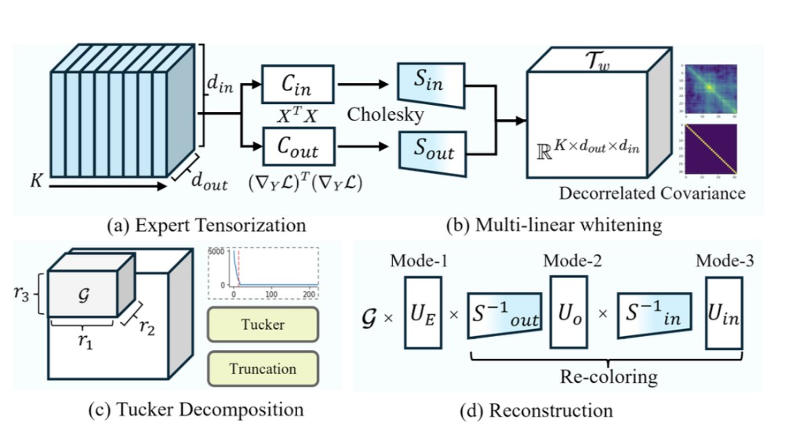
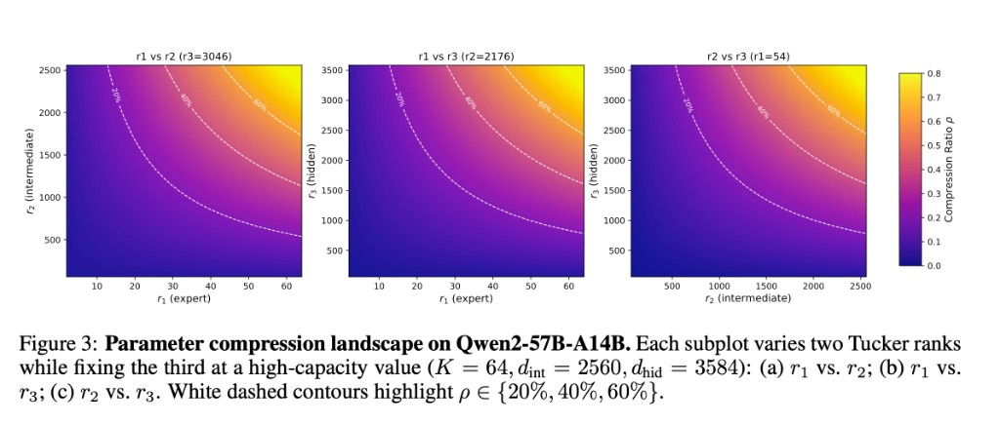
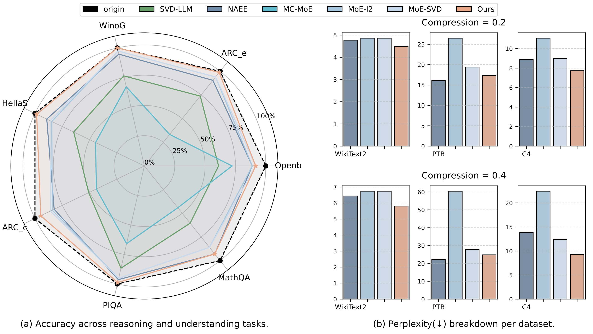

Part A
背景與比較定位
- MoE 記憶體困境
- 四大壓縮策略（剪枝／合併／量化／分解）
- 既有方法侷限（見樹不見林）與問題定義
- 與六類既有方法全面比較
跨專家聯合 Tucker 分解 · 多線性白化 · 三維秩分配
Tensor Decomposition for Mixture-of-Experts Compression

主線：動機與問題設定 → TD-MoE 方法與公式 → 實驗與消融 → 結語
近年語言模型參數規模與上下文長度急遽上升——dense Transformer 幾乎每顆權重、每層都參與每次前向；訓練與推理的算力與記憶體需求跟著線性甚至超線性惡化，難以在單卡／邊緣部署。
結論：MoE 能以極少的「單步算力 (13B)」達到接近 70B Dense 模型的表現，但代價是總參數量龐大，吃掉大量記憶體（推論時仍須載入所有專家）。
MoE 架構以稀疏激活換取擴展性——但全部專家權重必須常駐記憶體，部署瓶頸極為嚴重。
結論：MoE 能以極少的「單步算力 (13B)」達到接近 70B Dense 模型的表現，但代價是總參數量龐大，吃掉大量記憶體（推論時仍須載入所有專家）。
MoE 的效率承諾：每個 token 只路由到 top-K 個專家（如 Mixtral 啟用 2/8），計算量僅為 dense 模型的一小部分。
但記憶體代價：即使每次只啟用 2 個專家，全部 8 個專家的權重都必須常駐 GPU 記憶體——因為路由是動態的，無法預知下一個 token 會用哪個專家。
面對 MoE 的記憶體困境，學界發展出四類主要壓縮策略。以下逐一說明原理與 trade-off。
| 面向 | ① 剪枝 Pruning | ② 合併 Merging | ③ 量化 Quantization | ④ 分解 Decomposition |
|---|---|---|---|---|
| 原理 | 移除不重要的整個專家或結構化子單元（神經元/層） | 依相似度/頻率聚類相近的專家，合併為一個 | 將 FP16/FP32 權重量化到 INT8/INT4/NF4 低精度 | 將權重矩陣分解為低秩乘積 \(W \approx UV^\top\) |
| 壓縮比 | K/K' 整數倍（如 8→4 = 50%） | 取決於合併數（通常 20–50%） | 位元比（FP16→INT4 = 4×） | 連續可控（\(\rho\) = 20–60%） |
| 架構改動 | 需修改路由邏輯 | 需重組專家結構 | 不改架構 ✓ | 不改架構 ✓ |
| 可逆性 | 不可逆（刪即丟失） | 難以還原 | 部分可逆（可反量化） | 可調秩恢復 |
| 推理加速 | 直接加速（少算專家） | 部分加速 | 硬體級加速 ✓ | 取決於秩選擇 |
| 與其他正交 | 部分（可接量化） | 部分 | 高度正交 ✓ | 高度正交 ✓ |
| 跨專家利用 | ✗ 否 | 部分（相似度判斷） | ✗ 否 | TD-MoE ✓（Tucker 聯合） |
| 代表方法 | NAEE, MoE-I2 | MC-SMoE, MergeMe | MoEQuant, 8-bit NF4 | MoE-SVD, TD-MoE ★ |
同一層中 64 個專家（如 Qwen2）被餵入相似的 token 分佈，權重矩陣之間存在大量共享子空間——逐專家 SVD 把它們當作毫無關聯的獨立個體。
一層 \(K\) 個專家 \(W^{(i)}\!\in\!\mathbb{R}^{d_{\text{out}}\times d_{\text{in}}}\)。壓縮目標——在校正分佈上最小化輸出誤差：
對照關係：\(y\!\leftrightarrow\!W^{(i)}x\)、\(\hat y\!\leftrightarrow\!\hat W^{(i)}x\)；只是在 MoE 場景下再加上「跨 \(K\) 個專家求和」。
對同一筆輸入 \(x\)，比較原始專家輸出 \(W^{(i)}x\) 與壓縮後輸出 \(\hat{W}^{(i)}x\)，兩者做 \(L_2\) 距離平方，對所有專家加總後，再對校正資料分佈取期望。
也就是把「原模型行為」當教師訊號：誤差越小越好， 代表壓縮模型在校正集上的行為越接近原模型。
| 項目 | 設定 |
|---|---|
| 模型 | Qwen2-57B-A14B · Mixtral-8×7B · Phi-3.5-MoE |
| 校正 | WikiText-2 × 256 筆 |
| 壓縮 | 20% / 40% / 60% |
| 推理 | 7 項 zero-shot 常識推理 |
| PPL | WikiText-2 · PTB · C4 |
| 額外 | HumanEval（Pass@1）· XNLI |
| 框架 | LM-Evaluation-Harness |
| 方法 | 類型 | 跨專家 | 需刪/合 | 資料感知 | 核心侷限 |
|---|---|---|---|---|---|
| MoE-SVD | 逐專家 SVD | ✗ | 否 | 部分 | 假設冗餘在輸入側；高壓縮崩潰 |
| NAEE | 剪枝 | ✗ | 是 | 否 | 離散、可能傷路由 |
| MC-MoE | 合併＋剪枝 | 部分 | 是 | 否 | 頻率啟發式 |
| MoE-I2 | 剪枝＋SVD | ✗ | 是 | 否 | 兩階段決策複雜 |
| D2-MoE | Delta SVD＋量化 | 部分 | 否 | 否 | Delta 假設有限 |
| SVD-LLM | 截斷感知 SVD | ✗ | 否 | 部分 | 逐矩陣，不含 MoE 特化 |
| TD-MoE | 聯合 Tucker | ✓ 三維 | 否 | 多線性白化 | 離線計算略多（一次性） |
1 給定矩陣 \(W\!\in\!\mathbb{R}^{m\times n}\)，SVD 分解為：
保留前 \(r\) 個奇異值 → 參數從 \(mn\) 降為 \(r(m+n)\)。
2 給定張量 \(T\!\in\!\mathbb{R}^{d_1\times d_2\times d_3}\)，Tucker 分解為：
\(G\!\in\!\mathbb{R}^{r_1\times r_2\times r_3}\) 為核張量，\(U^{(n)}\!\in\!\mathbb{R}^{d_n\times r_n}\) 為因子矩陣。
3 Mode-n 乘積定義（元素層面）：
沿第 \(n\) 維做矩陣乘法，其餘維度不動。
以 Mixtral-8×7B（K=8, dout=14336, din=4096）一層 FFN 為例，對比三種壓縮策略的參數量差距。
目標 50% 壓縮 → r ≈ 1596；仍有 8 份完全獨立的 \(U_i, V_i\)，跨專家冗餘全未利用。
取 r₁=6, r₂=2048, r₃=3072：
\[= 37.7\text{M} + 48 + 29.4\text{M} + 12.6\text{M} \approx \mathbf{79.7\text{ M}}\]壓縮率 83%！且 Kr₁ = 8×6 = 48 ≈ 0，幾乎免費的「跨專家壓縮」。
參數量對比（目標保留 50%，Mixtral-8×7B 一層 FFN）
Tucker 79.7M 參數來源分解
SVD 獨立基底 vs Tucker 共享基底
結論：MoE 能以極少的「單步算力 (13B)」達到接近 70B Dense 模型的表現，但代價是總參數量龐大，吃掉大量記憶體（推論時仍須載入所有專家）。
模型運作時，輸入特徵（activations）之間往往具有高度的相關性。這使得特徵空間處於「病態（ill-conditioned）」狀態：
結論：MoE 能以極少的「單步算力 (13B)」達到接近 70B Dense 模型的表現，但代價是總參數量龐大，吃掉大量記憶體（推論時仍須載入所有專家）。
類比：想像你要壓縮一張圖片，但圖片的像素值被嚴重扭曲（某些通道放大 6000 倍，某些幾乎消失）。
壓縮演算法看到的是扭曲後的數值——它會優先保留「數值大的方向」，但那些方向可能只是被尺度膨脹而非真正重要。
| 層 | 白化前 λ 範圍 | 白化前最大相關 | 白化後殘差 |
|---|---|---|---|
| L3 | 22 — 39,000 | 0.72 | <10⁻⁷ ✓ |
| L7 | 18 — 43,000 | 0.78 | <10⁻⁷ ✓ |
| L9 | 9 — 54,000 | 0.63 | <10⁻⁷ ✓ |
| L24 | 24 — 19,000 | 0.79 | <10⁻⁷ ✓ |
將傳統 2D 白化擴展到 3D 張量環境（因此稱為「多線性」），利用真實資料統計量引導分解。
1 收集真實數據統計量
使用校準數據（256 筆 WikiText-2）讓模型跑一次 forward + backward：
2 計算協方差矩陣
\(\Sigma_{\text{in}}\) 捕捉輸入特徵之間的相關性；\(\Sigma_{\text{out}}\) 反映輸出對損失函數的敏感度。
3 生成白化轉換矩陣
加入微小常數 \(\epsilon\) 確保數值穩定（論文用 \(10^{-3}\) 作為特徵值截斷閾值）。實作上透過 Cholesky 分解高效計算。
4 對 3D 張量進行「洗白」
沿 mode-2（輸出維度）乘上 \(S_{\text{out}}\)，沿 mode-3（輸入維度）乘上 \(S_{\text{in}}\)。
結果：產生一個條件良好的張量 \(T_w\)，所有維度的特徵值被統一為 1.0，相關性被完全消除。
白化在壓縮階段帶來巨大效益——但推論時會不會因為多乘白化矩陣而變慢？答案是：完全不會。
Tucker 分解在白化域完成後，原始張量的重建路徑為：
如果每次推論都要乘 \(S^{-1}\)，會增加 \(O(d_{\text{out}}^2 + d_{\text{in}}^2)\) 的額外計算。
在壓縮完成後、部署之前，一次性計算：
然後只儲存 \(U'_2, U'_3\)，丟棄原始的 \(U_2, U_3, S_{\text{in}}, S_{\text{out}}\)。
固定 \((r_1,r_2)\) 掃描，用上式閉式求 \(r_3\)，投影到 \([1,d_{\text{in}}]\)。整個搜尋從三維降為二維。
最內層 \(r_3\) 為閉式 → 搜尋從 \(O(K\!\cdot\!d_{\text{out}}\!\cdot\!d_{\text{in}})\) 降為 \(O(K\!\cdot\!d_{\text{out}})\)。

結論：MoE 能以極少的「單步算力 (13B)」達到接近 70B Dense 模型的表現，但代價是總參數量龐大，吃掉大量記憶體（推論時仍須載入所有專家）。
| 層 | 白化前 λ_min – λ_max（病態範圍） | 白化前最大相關 | 白化後偏差 |
|---|---|---|---|
| L3 | 22 – 3.9×10⁴ | 0.72 | <10⁻⁷ ✓ |
| L5 | 31 – 3.8×10⁴ | 0.64 | <10⁻⁷ ✓ |
| L7 | 18 – 4.3×10⁴ | 0.78 | <10⁻⁷ ✓ |
| L9 | 9 – 5.4×10⁴ | 0.63 | <10⁻⁷ ✓ |
| L12 | 10 – 5.3×10⁴ | 0.76 | <10⁻⁷ ✓ |
| L24 | 24 – 1.9×10⁴ | 0.79 | <10⁻⁷ ✓ |
| 元件 | Mixtral-8×7B（8 experts） | Phi-3.5-MoE（16 experts） |
|---|---|---|
| 白化記憶體 | 890 MB | 231 MB |
| 白化 FLOPs | 0.11 TFLOPs | 0.02 TFLOPs |
| Cholesky 分解 | 784 MB | 156 MB |
| Tucker 分解（隨機化） | 20.7 s | 7.1 s |
| 逐專家 SVD（基線） | 9.4 s | 17.7 s |
| Tucker vs SVD 速度比 | 1.3–2.2× 較慢 | 2.5–4.6× 更快！🚀 |

7 項 zero-shot 常識推理之平均準確率；虛線為未壓縮原始模型 0.63。
| ρ | 方法 | Wiki↓ | PTB↓ | C4↓ | Openb | ARC-e | WinoG | HellaS | ARC-c | PIQA | MathQA | Avg↑ |
|---|---|---|---|---|---|---|---|---|---|---|---|---|
| 0% | 原始 | 5.12 | 9.18 | 8.86 | .33 | .75 | .74 | .63 | .46 | .81 | .39 | 0.59 |
| 20% | NAEE | 6.96 | 10.39 | 10.52 | .31 | .72 | .72 | .59 | .42 | .79 | .36 | 0.56 |
| MoE-SVD | 5.41 | 13.26 | 11.63 | .30 | .73 | .73 | .61 | .45 | .78 | .35 | 0.56 | |
| TD-MoE | 6.67 | 10.28 | 10.35 | .31 | .79 | .73 | .59 | .49 | .80 | .37 | 0.58↑4% | |
| 40% | NAEE | 8.79 | 12.64 | 13.26 | .28 | .72 | .71 | .54 | .39 | .76 | .32 | 0.53 |
| MoE-SVD | 13.43 | 23.88 | 18.83 | .29 | .63 | .65 | .45 | .33 | .71 | .31 | 0.48 | |
| TD-MoE | 7.96 | 12.37 | 12.91 | .31 | .77 | .71 | .54 | .44 | .78 | .36 | 0.56↑17% | |
| 60% | NAEE | 14.79 | 23.52 | 25.00 | .21 | .58 | .61 | .44 | .29 | .69 | .26 | 0.44 |
| MoE-SVD | 19.46 | 29.94 | 25.06 | .27 | .62 | .64 | .44 | .32 | .69 | .30 | 0.47 | |
| TD-MoE | 12.21 | 19.87 | 20.49 | .28 | .73 | .69 | .45 | .41 | .75 | .31 | 0.52↑11% |
ARC-c 與 HellaSwag 對推理能力最敏感，TD-MoE 改進最顯著。40% 壓縮時 MoE-SVD PPL 爆衝 23.88（PTB），TD-MoE 僅 12.37。
| ρ | 方法 | Wiki↓ | PTB↓ | C4↓ | Avg↑ |
|---|---|---|---|---|---|
| 0% | 原始 | 3.5 | 8.4 | 8.2 | 0.62 |
| 20% | ASVD | 7.2 | 10.7 | 9.6 | 0.56 |
| MoE-SVD | 4.6 | 10.1 | 9.9 | 0.60 | |
| TD-MoE | 4.7 | 9.2 | 9.1 | 0.61 | |
| 40% | SVD-LLM | 38.8 | 68.5 | 43.8 | 0.43 |
| MoE-SVD | 5.5 | 11.7 | 11.9 | 0.56 | |
| TD-MoE | 6.4 | 10.9 | 10.8 | 0.58 | |
| 60% | SVD-LLM | 7168 | 7101 | 7119 | 0.31 |
| MoE-SVD | 7.5 | 21.0 | 21.9 | 0.49 | |
| TD-MoE | 13.7 | 19.7 | 17.9 | 0.50 |
SVD-LLM 60% 壓縮時 PPL 爆衝到 7168——完全崩潰；TD-MoE 仍維持 13.7。
| 任務 | ρ | MoE-SVD | TD-MoE | Δ |
|---|---|---|---|---|
| HumanEval | 0% | 0.293 | — | |
| HumanEval | 20% | 0.079 | 0.240 | +0.161 |
| HumanEval | 40% | 0.037 | 0.140 | +0.103 |
MoE-SVD 在 20% 壓縮時 Pass@1 就從 0.293 崩到 0.079——因為逐專家 SVD 破壞了共享的程式碼子空間。TD-MoE 保持 0.240。
| ρ | MoE-SVD | TD-MoE | Δ |
|---|---|---|---|
| 0% | 0.450 | — | |
| 20% | 0.390 | 0.440 | +0.050 |
| 40% | 0.380 | 0.410 | +0.030 |
| 設定 | 剪枝 | LM PPL | Avg |
|---|---|---|---|
| 原始 | — | 8.57 | 0.63 |
| 20% 壓縮 | |||
| TD-MoE | 0% | 9.81 | 0.66 |
| ＋NF4 量化 | 0% | 9.70 | 0.66 |
| ＋結構剪枝 | 20% | 12.72 | 0.64 |
| ＋結構剪枝 | 40% | 15.72 | 0.61 |
| 40% 壓縮 | |||
| TD-MoE | 0% | 13.20 | 0.57 |
| ＋NF4 量化 | 0% | 13.19 | 0.56 |
8-bit 量化疊加後 PPL 僅差 0.01——高度正交相容。
| 超參 | 範圍 | ΔPPL | ΔAcc |
|---|---|---|---|
| 校正 N | 128–2k | ±0.03 | ±0.01 |
| τ (20%) | 10⁻¹–10⁻⁴ | ±0.09 | ±0.01 |
| τ (40%) | 10⁻¹–10⁻⁴ | ±0.07 | ±0.01 |
CUDA / Meta Tensor 語言友善：TD-MoE 的核心運算仍可表達為規律的 tensor contraction / tensor product，描述上簡潔，容易映射到既有 GPU kernel 生態。
可攜性：由於本質是張量乘積與低秩重建，未來移植到 NPU / 專用加速器的潛力也不錯，特別適合做 compiler-level pattern matching 與算子融合。
Code：github.com/ust-xu/TD-MoE · ←→ / Space 翻頁 · HomeEnd
Yuebin Xu · Yanhong Wang · Xuemei Peng · Hui Zang · Minghao Chen · Pengfei Xia · Zeyi Wen
HKUST (GZ) · HKUST · Huawei